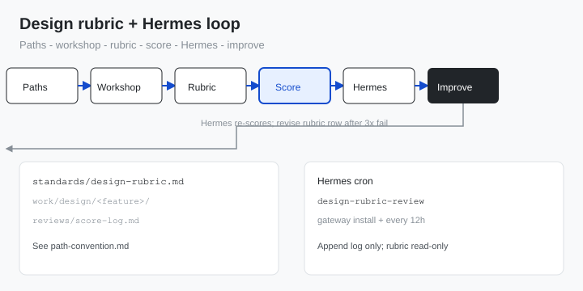

Fill in where rubrics, work, and logs live.
Toolkits / Research + Design
Walkthrough
Self-improving design rubrics with Hermes
Teams using AI for UI still lose time in review when nobody agrees what good looks like. This walkthrough helps you write a design rubric, score work before you share it, integrate Hermes, and rerun review on a schedule until outputs pass - then revise rubric rows when the same gap keeps showing up.
You need: A git repo (or drive) for rubrics and design evidence, people who approve design, and Hermes CLI + gateway on a machine that can reach that repo.
After this walkthrough
You will integrate Hermes into your setup and develop self-improving design rubrics using Hermes: a team-authored design rubric, a score log, manual pre-share checks, and a Hermes cron that rescored design files against that rubric until they pass.
Start here
This is a team process with Hermes handling the repeat scoring. You choose where files live, you write the rubric, and Hermes runs the review on a schedule you set.
Who this is for
| Role | What you get |
|---|---|
| UX researcher | Optional: add a research rubric using the same workshop pattern |
| Product designer | Clear pass/fail language before critique or build |
| PM or ops | One score log and one Hermes cron the whole team can reuse |
What you’ll have
- A design rubric file with rows your team picked in the workshop
- A filled-in path convention (where rubric, work, and logs live)
- A score log every review appends to
- A Hermes cron job that reads the rubric and rescored design files on schedule
Why rubrics + loop
What usually changes when review is scored instead of debated.
Before Research lives in one tool, design in another, and approval happens in meetings. AI drafts pile up with no shared pass line. The same gaps show up every sprint.
After The team agrees rubrics once, scores before share, and reruns review on failed items. Approvals become yes, or one named fix on a rubric row.
Walkthrough
Do steps 1-3 once per programme or product area. Do steps 4-6 whenever you prepare design work for approval or refine the rubric after repeat failures.
-
Step 1
Agree where design work and the rubric live.
Download path-convention.md and fill in one row per deliverable type. Examples use a git layout; you can use Notion URLs and Figma links instead if every checklist names the canonical link.
# Example layout (change names to match your team) standards/design-rubric.md work/design/<feature-name>/ reviews/score-log.md reviews/checklists/<task-name>.md
Expected: everyone can answer "where is the file?" without a Slack thread.If it fails: Outputs only exist in decks or chat. Pick one canonical path or URL per deliverable before continuing.
-
Step 2
Run the design rubric workshop.
Use rubric-design-workshop.md as the facilitator guide. Pick 6-8 scoring rows for design, set the pass total, and dry-run one real screen or flow from last month.
Expected: design dimension list is written and two scorers are within 3 points on the dry run.If it fails: Scorers disagree widely. Rewrite vague rows ("high quality") into observable checks.
-
Step 3
Save the design rubric where the team can find it.
Start from design-standards-rubric.md on this page. Replace row names and pass rules with what the workshop produced. Store at the path you chose in step 1.
# Example only - use YOUR paths from step 1 # Copy templates from Downloads into your standards folder # Edit every row; add "when you score below threshold" notes
Expected: design rubric at a stable location; header states version and pass threshold.If it fails: File is still the generic template. Add at least two team-specific rows from the workshop.
-
Step 4
Score manually before share.
Copy rd-review-checklist.md for each task. Score the artefact, append a row to your score log, and share only if Pass = Y.
# Per task 1. Open checklist for this task 2. Score each rubric row 0, 1, or 2 3. Add row to score log (see score-log-template.md) 4. Share only if Pass = Y
Exit: approval request includes checklist, artefact link, and log row.If it fails: Scores look fine but critique still debates basics. Add one observable row before moving to Hermes.
-
Step 5
Integrate Hermes and create the review cron.
If Hermes is not installed yet, complete setup-hermes-personal (CLI, gateway, workdir). Then open agent-review-prompt.md, paste your paths from step 1, and create the cron.
hermes gateway install hermes cron create \ --name design-rubric-review \ --workdir "/path/to/your/repo" \ --skill requesting-code-review \ "every 12h" \ "Read standards/design-rubric.md. Score work/design/** changed in 14d. Append to reviews/score-log.md only." hermes cron run <job-id>
Expected: job ID returned; manual run appends rows to YOUR score log; rubric file unchanged.If it fails: Cron never runs — gateway not installed; rerun
hermes gateway installand checkhermes cron status. Agent edits rubrics — tighten prompt: append log only, rubrics read-only. -
Step 6
Improve the rubric and rerun until pass.
For each Fail row in the log, apply one fix tied to the lowest-scoring rubric row. Let Hermes rescore on the next run. When the same rubric row fails on three different tasks, rewrite that row in a short workshop and bump the rubric version — that is the self-improving loop.
Expected: failed scores turn into one targeted fix, then Pass = Y on rerun.If it fails: Scope is too big. Score one study or one screen at a time.
Further reading
Public references for rubric design and review quality. None are required to run this walkthrough.
| Source | Topic | Why it helps | Link |
|---|---|---|---|
| GOV.UK Service Manual | User research | Plain-language bar for research quality and sharing | gov.uk |
| Nielsen Norman Group | Heuristic evaluation | Scoring dimensions for design review | nngroup.com |
| W3C | WCAG quick reference | Concrete checks for accessibility rows in design rubrics | w3.org |
| Excalidraw | Wireframe files | Open format for design evidence if you do not use Figma | excalidraw.com |
Loop diagram
Six steps: agree paths, workshop, save design rubric, score manually, integrate Hermes cron, improve rubric rows when patterns repeat.

Downloads
Starter files. Customize in step 3; do not treat them as final team standards.
-
path-convention.md -
rubric-design-workshop.md 45 min facilitator guide.
-
research-standards-rubric.md Starter research rubric (8 rows).
-
design-standards-rubric.md Starter design rubric (8 rows).
-
rd-review-checklist.md Per-task checklist with score tables.
-
score-log-template.md Human and agent review history.
-
agent-review-prompt.md Hermes cron create prompt + self-improving rubric notes.
Troubleshooting
Common blockers and which step fixes them.
- Nothing to score except slides. Step 1 - Add a file path or URL rule before rubrics.
- Rubric forgotten after the workshop. Step 2 - Require checklist link in your review template.
- Template shipped unchanged. Step 3 - Add team-specific rows from workshop notes.
- Research does not unblock design. Step 2 - Optional research rubric; fix design actionability rows first.
- Cron never runs. Step 5 - Run
hermes gateway install; confirm withhermes cron status. - Agent reviews the wrong folders. Step 5 - Paste explicit paths from path-convention into the cron prompt.
- Same item fails repeatedly. Step 6 - Narrow scope or hold a live working session.
Companion walkthroughs
Required for Hermes setup; optional shorter path if you want manual scoring only.
Attribution. Process pattern: design rubric workshop, score-before-share, Hermes cron rescore, human rubric revision when rows repeat-fail. Starter templates are CC0-style guidance - adapt freely in your organisation.